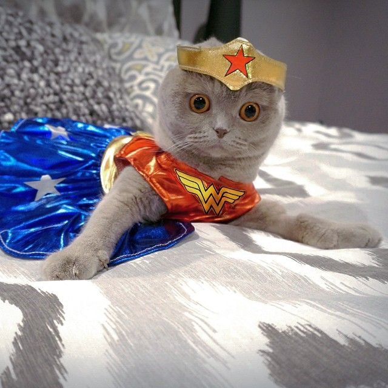
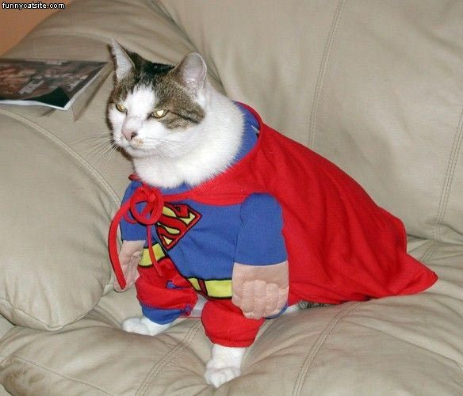
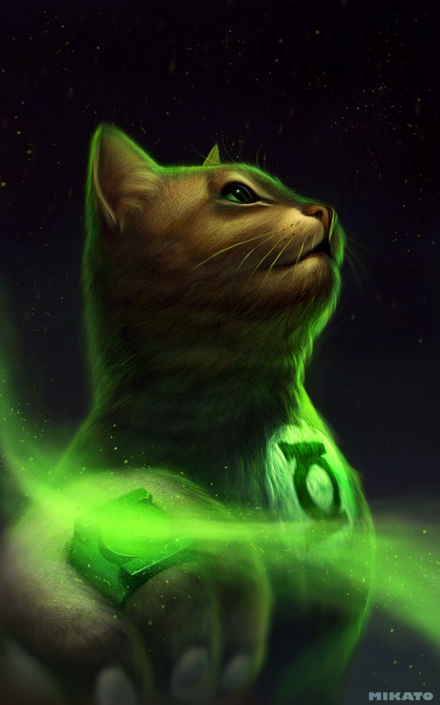

Nome:Batman
Descrição: Batman é um personagem fictício, um super-herói da banda desenhada americana publicada pela DC Comics. Foi criado pelo escritor Bill Finger e pelo artista Bob Kane, e apareceu pela primeira vez na revista Detective Comics #27 (Maio de 1939). Originalmente com o nome "o Bat-Man", o personagem também é conhecido por vários epítetos como "o Cruzado de Capa" (The Caped Crusader), "o Cavaleiro das Trevas" (The Dark Knight), e "o Maior Detective do Mundo" (The World's Greatest Detective).
A identidade secreta de Batman é Bruce Wayne, um bilionário americano, playboy, magnata de negócios, filantropo e dono da corporação Wayne Enterprises. Depois de testemunhar o assassinato dos seus pais enquanto criança, Wayne jurou vingança contra os criminosos, um juramento moderado por um sentido de justiça. Wayne treina então a si próprio, tanto física como intelectualmente, e cria uma persona inspirada no morcego para combater o crime: Batman. Batman opera na cidade fictícia de Gotham City, e é ajudado por outros personagens incluindo o seu mordomo Alfred Pennyworth, o comissário da policia Jim Gordon, e outros aliados vigilantes como Robin. Ao contrário da maior parte dos super-heróis, Batman não tem superpoderes; faz uso do seu intelecto de gênio, da sua perícia em artes marciais, da sua destreza física, das habilidades de detective, da ciência e da tecnologia, da sua riqueza, da sua provocação ao medo e intimidação e uma vontade indomável na sua guerra contínua contra o crime. Uma grande variedade de vilões compõem a galeria de inimigos do Batman, incluindo seu arqui-inimigo Coringa.

Nome: Mulher Maravilha
Descrição: Mulher-Maravilha (em inglês, Wonder Woman) é uma personagem fictícia de histórias em quadrinhos publicadas pela editora estadunidense DC Comics, originalmente é uma super-heroína de origem grego-romana, alter ego da princesa Diana de Themyscira, também conhecida como Diana Prince no Universo DC. Embaixadora honorária da ONU é considerada um dos maiores ícones da cultura pop do sexo feminino da nona arte e ícone da cultura feminista. Sua primeira aventura foi na revista All Star Comics #8 de dezembro de 1941, nos Estados Unidos, escrita por William Moulton Marston e desenhada por H. G. Peter (Harry George Peter). A história tem continuação direta em Sensation Comics #1 de janeiro de 1942. Com o sucesso alcançado, ela ganhou sua própria revista em quadrinhos em maio de 1942, Wonder Woman #1, que foi transferida exclusivamente para a DC Comics em 1944.
Sua história de origem sofreu alterações com o passar dos anos. Entretanto, apesar das diferentes origens e dos diferentes uniformes, é possível dizer que a essência da personagem permaneceu a mesma desde sua criação. A Mulher-Maravilha é a princesa e embaixadora das Amazonas da ilha paradisíaca Themyscira e filha da rainha das amazonas, Hipólita. Ela foi mandada ao “mundo dos homens” para propagar a paz, sendo a defensora da verdade e da vida na luta entre os homens e o firmamento, entre os mortais e os deuses. Possuindo habilidades super-humanas e seu laço da verdade, ela faz parte da trindade da DC Comics e muitas vezes funciona como o equilíbrio entre os extremos de Superman e Batman. Tornou-se integrante da Liga da Justiça.

Nome: Superman
Descrição:Superman é um super-herói fictício de história em quadrinhos americanas publicado pela DC Comics, uma empresa subsidiária do grupo Time Warner. Superman, entretanto, já foi adaptado para diversos outros meios desde os anos 1930, como cinema, rádio, televisão, literatura e Video game. Superman é um super-herói criado pela dupla de autores de quadrinhos Joe Shuster e Jerry Siegel. Sua primeira aparição foi apresentada na revista Action Comics #1 em 1938, nos Estados Unidos. O personagem nasceu no planeta fictício de Krypton e tinha o nome de Kal-El. Foi mandado à Terra por seu pai, Jor-El, um cientista, momentos antes do planeta explodir.O foguete aterrissou na Terra na cidade de Smallville (por alguns anos, foi traduzida no Brasil como Pequenópolis), onde o jovem Kal-El foi descoberto pelo casal de fazendeiros Jonathan e Martha Kent. Conforme foi crescendo, ele descobriu que tinha habilidades diferentes dos humanos. Quando não está com o tradicional uniforme azul e vermelho, ele vive como Clark Kent, repórter profissional no Planeta Diário

Nome:Lanterna Verde
Descrição:Lanterna Verde (em inglês: Green Lantern) é um nome compartilhado por diversos super-heróis da DC Comics. Criado por Martin Nodell e Bill Finger, o Lanterna Verde original estreou em All-American Comics nº16 (1940). Reformulado como um novo super-herói com o mesmo nome nos anos 60, o personagem original ficou conhecido por Alan Scott e por um tempo adotou a identidade de Sentinela (Brasil).
O Lanterna Verde atual foi lançado nos quadrinhos da década de 60, e também é conhecido como "O Lanterna Verde da Era de Prata". A inspiração foi a série literária Lensman de E. E. Smith. A identidade do Lanterna Verde da Era de Prata, era a de , membro fundador da Liga da Justiça da América. Apesar do excelente trabalho do desenhista Gil Kane nesse período, era um personagem de super-herói relativamente genérico até que em 1970 a DC resolveu emparelhá-lo com o Arqueiro Verde (Oliver "Ollie" Queen), em uma série de quadrinhos absolutamente inovadora e de cunho social. Essa época ajudou a consolidar o novo Lanterna Verde como um herói popular, apesar das séries subseqüentes abordarem temas mais cósmicos.